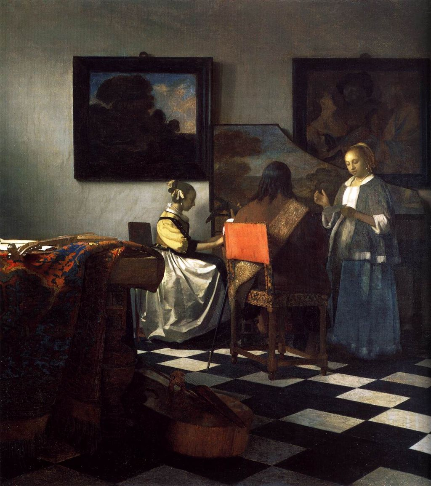
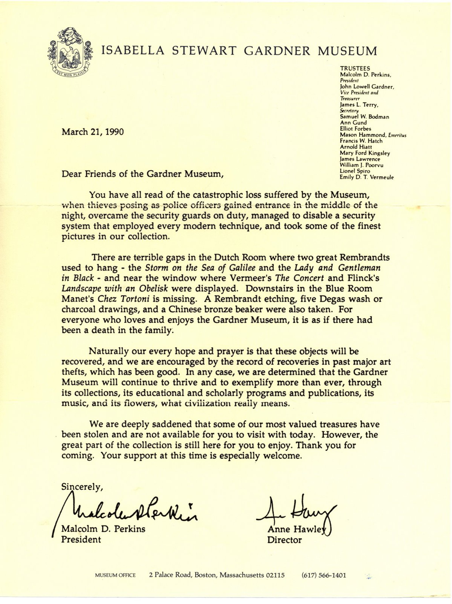

<head>
<meta charset="UTF-8" />
<meta name="keywords" content="drawing, painting" />
<meta name="description" content="drawings by Sunjy" />
<title>Sunjy</title>
<link rel="shortcut icon" type="image/x-icon" href="../../mImages/mCommon/favicon.ico" media="screen" />
<link rel="stylesheet" type="text/css" href="../../mCsses/mCommon/mCssA.css" />
<link rel="stylesheet" type="text/css" href="../../mCsses/mCommon/mCssB.css" />
<link rel="stylesheet" type="text/css" href="../../mCsses/mCommon/mCssC.css" />
<link rel="stylesheet" type="text/css" href="../../mCsses/mCommon/mCssD.css" />
<link rel="stylesheet" type="text/css" href="../../mCsses/mContent/mCssA.css" />
<link rel="stylesheet" type="text/css" href="../../mCsses/mContent/mCssB.css" />
<link rel="stylesheet" type="text/css" href="../../mCsses/mContent/mCssC.css" />
<link rel="stylesheet" type="text/css" href="../../mCsses/mContent/mCssD.css" />
</head>
<script type="text/javascript" src="../../mScripts/mContent/mContentAA.js" /></script>
<script type="text/javascript" src="../../mScripts/mContent/mContentAB.js" /></script>
<script type="text/javascript" src="../../mScripts/mContent/mContentAC.js" /></script>
<script type="text/javascript" src="../../mScripts/mContent/mContentAD.js" /></script>
<script type="text/javascript"></script> 
<script type="text/javascript">
document.write('<div class="mImgAbsolute"></div>');
/*
document.write('<p class="mFontSizeBColor" />From a white paper...</p>');
document.write('<table class="center"><tr><td>');
document.write('');
document.write('</td></tr></table>');
*/
</script>


<script type="text/javascript">
document.write('<p class="mFontSizeBColor" />The Concert</p>');
document.write('<p class="mFontSizeSColor" />“The Concert” by Johannes Vermeer depicts a man and two women playing music and singing. The young woman is sitting at a harpsichord. The man is playing the lute and a woman standing while singing.<br><br>The harpsichord’s upturned lid is decorated with a landscape. A viola da gamba can be seen lying on the floor.  This masterpiece belongs to the Isabella Stewart Gardner Museum in Boston, but was stolen in 1990 and remains missing.<br><br>It is reputed to be the most valuable unrecovered stolen painting ever, with a value estimated at over $200 million.<br><br>Vermeer painted mostly domestic interior scenes, and most of his paintings are set in two rooms of his house in Delft.<br><br>There are similar furniture and decorations in various arrangements in his domestic scenes, and his art often portrays the same people. He was not wealthy, as he left his family in debt after his death.<br><br>He produced relatively few paintings compared to his contemporaries. Art historians mainly overlooked Vermeer’s works for several centuries after his death. <br><br>However, his reputation has skyrocketed in the last few hundred years, and he is particularly renowned for his masterly treatment and use of light in his work.<br><br>As Vermeer’s fame increased, his work has been copied and stolen, which all helped to spread his reputation via the mass media. <br><br>Han van Meegeren was a 20th-century Dutch painter, who became a master forger and created and sold many new “Vermeers” before being caught and tried.<br><br>In 1971, Mario Pierre Roymans stole Vermeer’s “Love Letter” from the Fine Arts Palace in Brussels. It was on loan from the Rijksmuseum as a part of the Rembrandt and his Age exhibition.<br><br>In 1990, this painting “The Concert”  was stolen from the Isabella Stewart Gardner Museum.<br><br>“The Concert” is one of only 34 known works by Vermeer and was stolen in the early morning hours of March 18, 1990.<br><br>Two thieves disguised as Boston police officers gained entry to the museum and stole thirteen works of art.<br><br>The total worth of the stolen pieces has been estimated at $500 million, making the robbery the most significant single property theft in world history.<br></p>');
document.write('<table class="center" /><tr><td>');
document.write('<br>The harpsichord’s upturned lid is decorated with a landscape. A viola da gamba can be seen lying on the floor.  This masterpiece belongs to the Isabella Stewart Gardner Museum in Boston, but was stolen in 1990 and remains missing.<br><br>It is reputed to be the most valuable unrecovered stolen painting ever, with a value estimated at over $200 million.<br><br>Vermeer painted mostly domestic interior scenes, and most of his paintings are set in two rooms of his house in Delft.<br><br>There are similar furniture and decorations in various arrangements in his domestic scenes, and his art often portrays the same people. He was not wealthy, as he left his family in debt after his death.<br><br>He produced relatively few paintings compared to his contemporaries. Art historians mainly overlooked Vermeer’s works for several centuries after his death. <br><br>However, his reputation has skyrocketed in the last few hundred years, and he is particularly renowned for his masterly treatment and use of light in his work.<br><br>As Vermeer’s fame increased, his work has been copied and stolen, which all helped to spread his reputation via the mass media. <br><br>Han van Meegeren was a 20th-century Dutch painter, who became a master forger and created and sold many new “Vermeers” before being caught and tried.<br><br>In 1971, Mario Pierre Roymans stole Vermeer’s “Love Letter” from the Fine Arts Palace in Brussels. It was on loan from the Rijksmuseum as a part of the Rembrandt and his Age exhibition.<br><br>In 1990, this painting “The Concert”  was stolen from the Isabella Stewart Gardner Museum.<br><br>“The Concert” is one of only 34 known works by Vermeer and was stolen in the early morning hours of March 18, 1990.<br><br>Two thieves disguised as Boston police officers gained entry to the museum and stole thirteen works of art.<br><br>The total worth of the stolen pieces has been estimated at $500 million, making the robbery the most significant single property theft in world history.<br>" />');
document.write('</td></tr></table>');
document.write('<p class="mFontSizeBColor" />The announcement of the stolen masterpieces from the museum</p>');
document.write('<p class="mFontSizeSColor" />In 1990, this painting “The Concert”  was stolen from the Isabella Stewart Gardner Museum.</p>');
document.write('<table class="center" /><tr><td>');
document.write('');
document.write('</td></tr></table>');
</script>


